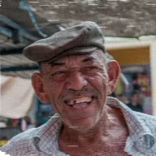

VHS

Nampak seperti pita video lama: warna meleleh, garisan kabur, garis imbas, hingar pita dan jalur penjejakan bergulung.
VHS menjadikan lapisan kelihatan seperti pita video lama. Tetapan mengawal Warna Meleleh, Calit, Garisan Imbas, Hingar pita, jalur Penjejakan yang bergolek, Goyang dan Ketepuan; Peralihan Kepala menghidupkan atau mematikan herotan peralihan kepala pita. Benih mengubah corak hingar rawak.
Gunakannya pada keseluruhan kumpulan untuk memberikan sesuatu babak rupa pita, dan tambah Butir Filem atau Pisah RGB untuk lebih lagi.
Tetapan
| Tetapan | Jenis | Julat | Lalai |
|---|---|---|---|
| Warna Meleleh | Nombor | 0 hingga 40 | 4 |
| Calit | Nombor | 0 hingga 20 | 2 |
| Garisan Imbas | Nombor | 0 hingga 1 | 0.3 |
| Hingar | Nombor | 0 hingga 1 | 0.3 |
| Penjejakan | Nombor | 0 hingga 1 | 0.5 |
| Goyang | Nombor | 0 hingga 20 | 1.5 |
| Ketepuan | Nombor | 0 hingga 2 | 0.7 |
| Peralihan Kepala | Hidup atau mati | – | Hidup |
| Benih | Nombor | 0 hingga 1000 | 1 |